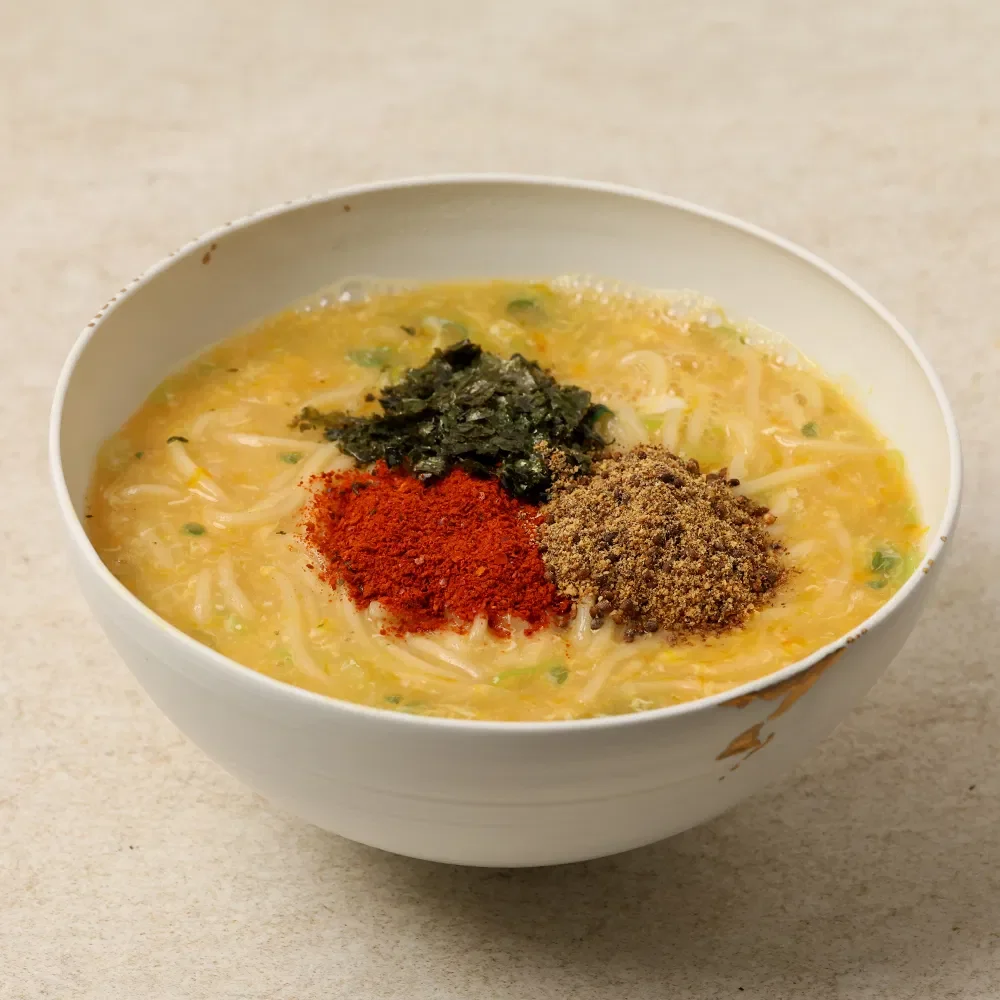

KALGUKSU
207.1 g × 4개입 · 1팩
공식 스토어에서 구매하기 ↗OFFICIAL ONLINE STORE
베테랑 네이버 브랜드스토어에서 만나보세요.
공식 스토어 전체 보기 ↗
KALGUKSU
207.1 g × 4개입 · 1팩
공식 스토어에서 구매하기 ↗MANDU
대용량 1,080 g
공식 스토어에서 구매하기 ↗ORIGINAL SOY MILK
200 mL × 5개
공식 스토어에서 구매하기 ↗현재 가격과 재고, 배송 일정은 공식 스토어에서 확인해 주세요.
주문·결제 및 주문 내역 확인은 네이버 브랜드스토어에서 진행됩니다.